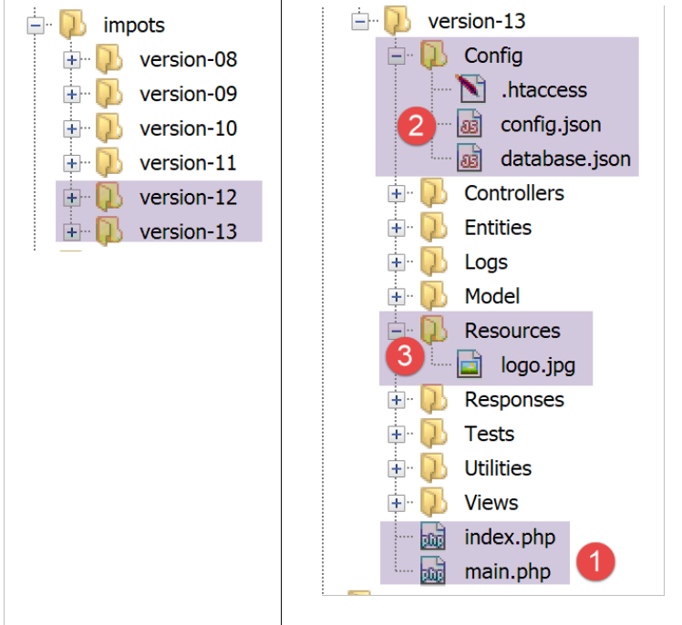
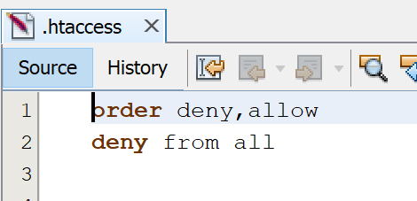
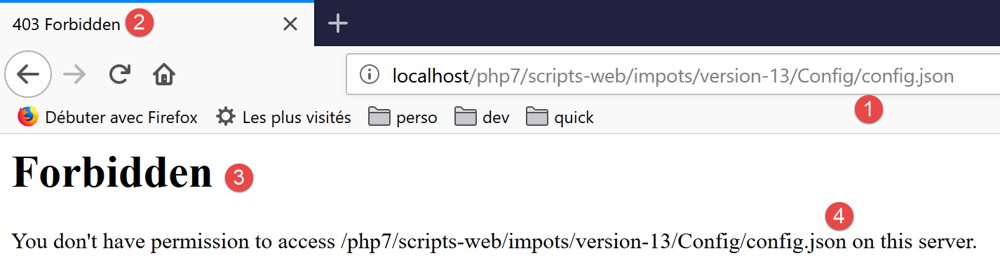
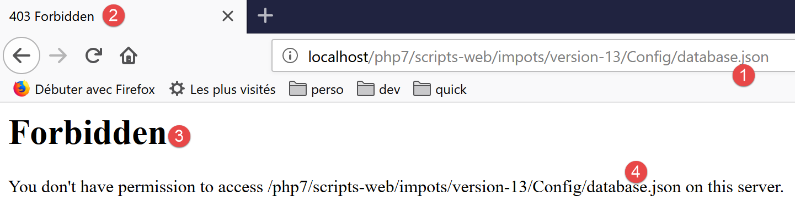
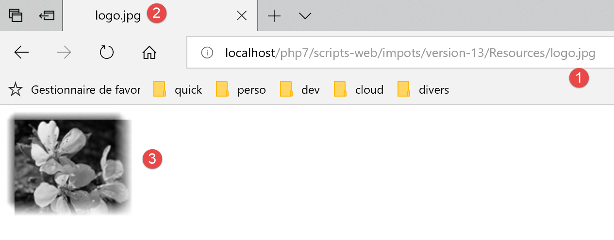
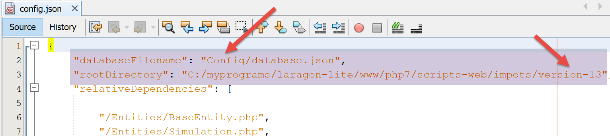
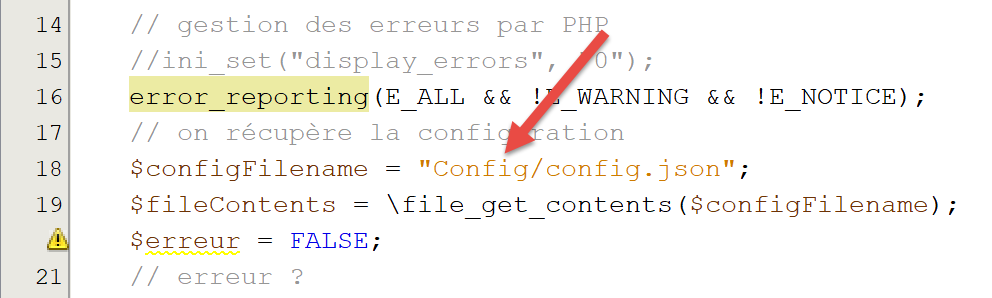
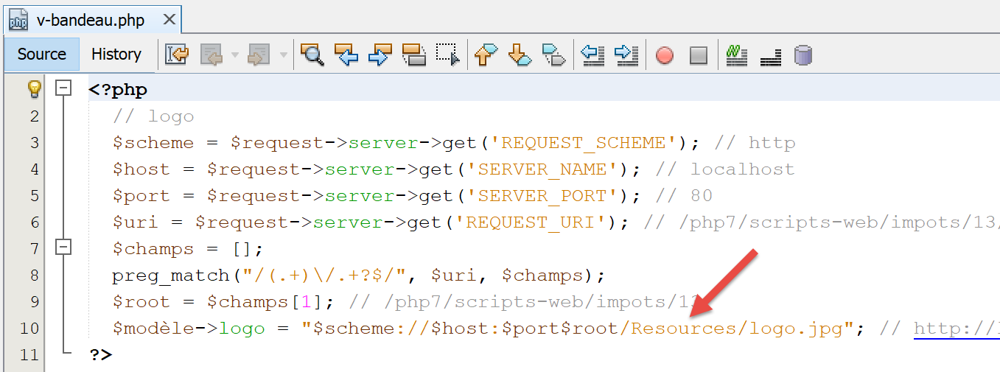

24. 应用练习 – 第13版
第13版变化不大：它加强了应用程序文件的访问安全性。
在第12版中，可以请求以下URL：URL，从而获得以下页面（Firefox）：

然而，该文件 [config.json] 包含敏感信息，例如获准使用该应用程序的用户凭证。该文件不应被用户访问。除 [main.php, index.php, Views/logo.jpg] 文件外，应用程序中的所有文件均应遵循此原则，而 [main.php, index.php, Views/logo.jpg] 文件则必须允许外部访问。 实际上，视图需要访问应用程序的徽标（HTTP）。第 13 版提供了一个解决此问题的简单方案。
在 NetBeans 中，我们将 [version-12] 文件夹复制并粘贴到 [version-13] 中：

- 在应用程序根目录下的 [1] 文件夹中，仅保留 [index.php, main.php] 脚本；
- 在 [2] 中，配置文件被放置在 [Config] 文件夹中；
- 在 [3] 中，将 [logo.jpg] 镜像放置在 [Resources] 文件夹中；
此处使用的 HTTP 服务器是一台 Apache 服务器。该服务器允许通过 [.htaccess] 文件控制对某个文件夹的访问。 对于所有希望通过 URL 禁止直接访问的文件夹，我们需要创建如下 [.htaccess] 文件：

这两行配置将禁止任何人访问该文件夹。
我们将此文件放置在应用程序的所有文件夹中，但根目录和 [Resources] 文件夹除外。最终，只有三个文件可从外部访问：[index.php, main.php, Resources/logo.jpg]。
让我们进行一些测试：





代码中需要进行一些修改：
在文件 [Config/config.json] 中：

在文件 [main.php] 中：

在文件 [Views/v-bandeau.php] 中：
